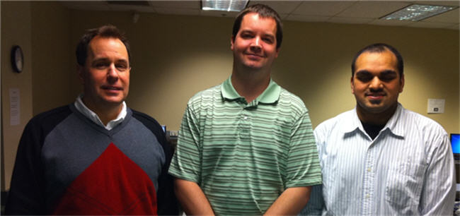

Credits
Technologies Used
- Dreamweaver was used to develop the web pages.
- Digital Cameras were used for video and still pictures.
- Gimp and SnagIt were used to manipulate images.
- Any Video Converter was used to compress videos.
- Windows MovieMaker was used to edit videos.
- jQuery was used to create accordions.
- The prettyPhoto jQuery plugin was used as a video player and image viewer.
- Quick Screen Capture and SnagIt were used for screen captures.
Our Team (from left to right - Mark Weiers, Brent Schleicher, Faizan Khan)
